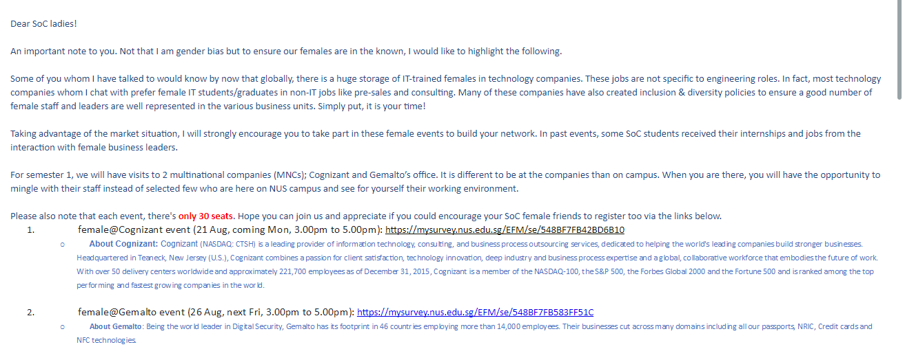
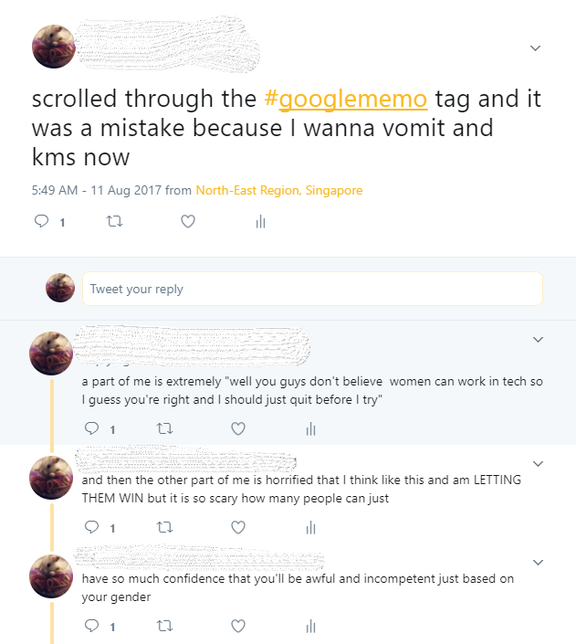

DEPERSONALISING THE PERSONAL
Recently, issues like racism, sexism, privilege, classism are talked about frequently and in everyday situations. They’re societal and political problems, but at the same time, they’re very personal to a lot of people, because they manifest in daily life. Whether in microaggressions, prejudice, or outright harassment, because people have to face these manifestations daily, it’s only natural to react in anger, become upset, or cynical.
First Reactions
When I entered university as a computer science major, I had heard much how it was a male-dominated field, and that I would be a minority. I brushed it off initially, thinking that I would not recognize gender as something that differentiates people. But when I got spoken over during group meetings, I wondered. When I taught junior students how to code, some male students refused to believe that I studied computer science. The admins of NUSWhispers (male computer science students who started it as a web project) approved an anonymous submission that slandered a female TA in the School of Computing, which is something that might not have happened if a female computer science student was on the team. The department has a strong career guidance system in place; we receive multiple emails a week regarding job opportunities and networking events. Amongst them are the frequent “Women In Tech” invitations. Here’s an example of one.

Personally, I’ve never attended these. In some way, these emails made me feel uncomfortable. But I could never put my finger on why, so I mostly just ignored them.
Recently, a Google employee James Damore posted a memo criticizing Google’s various diversity policies and efforts. It went viral and many people condemned him for arguing that women are underrepresented in tech not because they face bias and discrimination in the workplace, but because of “inherent psychological differences between men and women”. Damore was fired from Google.
I heard about it on Twitter, so I looked through the #googlememo hashtag to see what people were saying about it. Upon seeing how many people believed that James Damore was “fired for speaking the truth”, I was rather affected and upset, because to me it meant that people believed that women weren’t meant to work in tech. Here are some of my (pretty emotional) tweets after scrolling through the hashtag.

My thoughts here are somewhat monodimensional. “Men dominate tech and men don’t want women in tech.” But by learning to depersonalise and think about things from an academic or intellectual perspective, I find a way out of this frustration and negativity.
In USP, I took the module Polycentric Governance and in it, we discussed the principal-agent problem and the logic of appropriateness vs. the logic of consequences (March and Olson, 1998), and when I applied the principal agent problem to the situation of Korean ex-”comfort women” for a summer module that I mapped back to USP, I found that viewing a political problem through the lens of principal and agent was helpful in looking for ways out where there might first seem to be none.
Intellectually re-framing the ex-'comfort women' issue
During this module, I visited the home where some ex-‘comfort women’ had come to live together and, in their old age, are also taken care of by volunteers. Because of their age, many of these women had died or become physically unable to participate in activism, as they used to, to spread knowledge about their situation, especially with Japan doing its best to erase these horrors from their history textbooks.
The principal-agent problem arises when an agent, acting on behalf of the principal, has differing aims from the principal, resulting in the principal’s needs not being met. In my final paper, I used the principal-agent problem to navigate the uneven power relations between the Japanese, Korean government and the ex-‘comfort women’ themselves.
By looking individually at the principal’s needs and the agent’s goals I was able to identify the reason why the Korean “comfort women” weren’t appeased. I was exceedingly upset on behalf of the wronged Korean “comfort women”, too. But the way I made sense of the problem was different, compared to the recent #googlememo controversy, or when I received invitations to “females in tech” events. So I decided to look at the problem of diversity initiatives in computer science from this perspective as well. Here, I consider the company the agent, rolling out these diversity initiatives, on behalf of the principal, which are women and people of colour.
Intellectually re-framing the #GoogleMemo issue
We can understand companies’ desire to roll out ‘diversity initiatives’ using the logic of appropriateness and consequences. Action follows a logic of consequences when it is driven by subjective assessments of outcomes of alternative courses of action. Action follows a logic of appropriateness when it is shaped by rules relevant to the current situation (Schulz, 2014).
The logic of appropriateness sees a company such as Google as having to follow certain social rules. For example, since our society increasingly values inclusiveness, Google might try to adhere to this by presenting their company as inclusive through marketing materials or by having events tailored for women and people of colour. And by the logic of consequences, having a diverse set of members in your team ensures that your product is accessible to everyone. It prevents your team from making mistakes like the one that NUSWhispers did, which could have gotten them sued had the TA taken legal action. It might also prevent poorly made products, like this:

This was posted by Chukwuemeka Afigbo, Facebook’s head of platform partnerships in the Middle East and Africa. He tweeted: ‘If you have ever had a problem grasping the importance of diversity in tech and its impact on society, watch this video.’
From the perspective of the “principal”, however, the logic of consequences may compel us to go, in line with the company’s intentions, that we might increase the proportions of women and people of colour in the tech industry. But the logic of appropriateness, which often prevails in daily-life situations, might dictate that we shouldn’t attend events like “females @ Cognizant”, because we want to behave in a way that we fit in, and events such as these force us to identify ourselves as “other”. (It doesn’t help either that the person emailing is a man.) Additionally, emphasizing “diversity” in HR departments puts women and people of colour at the mercy of “you only got this job because you’re ____” comments.
In his memo, Damore seemed to respond only to the company’s apparent logic of appropriateness. Using the logic of consequences helps illuminate why the company invests these resources. Looking at the #googlememo issue again, I feel less like the problem of diversity in tech is a monolithic, unsolvable problem, and more focused on how to make it more socially appropriate for female students to attend “females @ Cognizant” events. My exposure to these lenses, and being able to think about the situation from these perspectives, allowed me a means to depersonalise some very personal issues with the field I am about to enter professionally, and point me towards a way forward.
References
James G. March and Johan P. Olson (1998),“The Institutional Dynamics of International Political Orders,” International Organization, Vol. 52, No. 4, International Organization at Fifty: Exploration and contestation in the Study of World Politics.(Autumn, 1998), pp. 943–969
Schulz, M. (2014). Logic of consequences and logic of appropriateness. Palgrave encyclopedia of strategic management, 2.